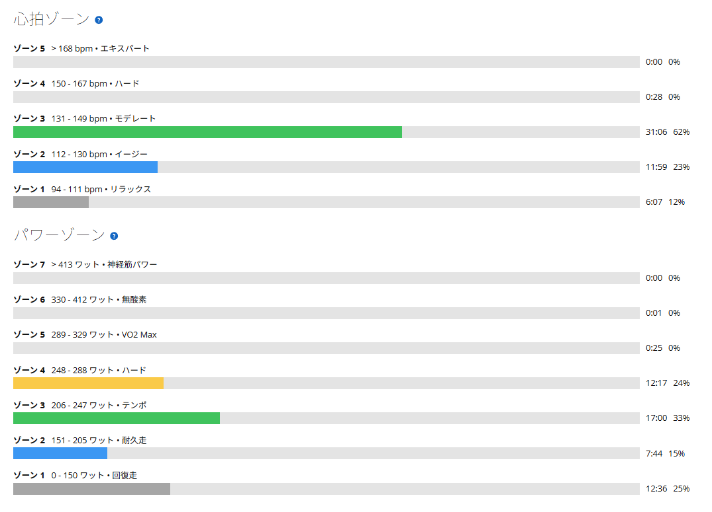

脚は動く。心拍も普通。でも今日は続けたくなかった
今日はローラー。メニューとしてはSST系をやるつもりだった。でも、途中で気持ちが切れた。
脚が終わったわけではない。心拍がおかしかったわけでもない。ただ「今日はもういいかな」という感じになってしまった。

25.01km・NP221W・TSS53.1
- 全体25.01km / 50分04秒 / 運動負荷105
- 負荷平均204W / NP221W / IF0.802 / TSS53.1 / 最大346W / 20分最大246W
- 心拍・回転平均132bpm / 最大152bpm / 平均84rpm
- 環境平均31.9℃ / 最高33.0℃ / 推定発汗813ml
- 効果有酸素TE3.2 / 無酸素TE0.0
Garminの判定は「ベース」。完全に流しただけではないけれど、予定していたところまではやらなかった。冒頭のグラフを見ると、パワー（紫）が途中で終わっているのが分かる。
1本目は20分246W。普通にできた
- 1本目20分02秒 / 246W / 心拍141〜152bpm
- レスト5分01秒 / 147W
- 2本目10分01秒 / 236W（ここで終了）
1本目は数字としては普通にまとまっている。心拍が高すぎるわけでもないし、脚がまったく動かないわけでもない。「今日は調子が悪くて無理」という感じではなかった。
5分休んで2本目へ。最初の10分は236W。ここも、まったく踏めていないわけではない。でも途中で、気持ちが乗らなくなった。苦しくて止めたというより、続ける気持ちがなくなった。体は動く。心拍も問題ない。でも今日はもうこれ以上やりたくない。そんな感じだった。
今日は身体より頭が先に終わった
こういう日は面白い。普段なら、脚が重いとか、心拍が上がるとか、暑さで苦しいとか、何かしら分かりやすい理由がある。でも今日はそれがあまりない。身体はそこまで悪くないのに、メニューを続ける気持ちだけがなくなった。
- 心拍ゾーンZ3 31分06秒（62%）/ Z2 11分59秒 / Z1 6分07秒 / Z4は28秒 / Z5はゼロ
- パワーゾーンZ4 12分17秒 / Z3 17分00秒 / Z2 7分44秒 / Z1 12分36秒

心拍を見ると、ゾーン4はたった28秒、ゾーン5はゼロ。最大でも152bpmである。身体側には、やめる理由が見当たらない。パワーもゾーン3とゾーン4で29分17秒入っていて、狙っていた帯域自体には普通に乗れていた。
完全レストの翌日は、入りが悪い？
少し気になっていることもある。自分は1日完全に自転車へ乗らないと、翌日にうまくスイッチが入らない気がする。もちろん、今回だけで決めつけるつもりはないし、完全休養が悪いわけでもない。ただ、アクティブレストで少しだけ乗った翌日の方が、自然にONへ入れることが多い気がする。ここは今後少し観察してみたい。
ただし他の要因もある。前日は友人宅で酒を飲んでいる。ここ最近はゴルビーや60/30、太平の高強度など、メニューを決めて走る日も多かった。今日はローラー上の気温も高めで、平均31.9℃、最高33.0℃である。だから「完全レストしたからダメだった」と単純に決めるのも違うと思う。疲労、暑さ、気分、生活リズム。いろいろ重なった可能性はある。
失敗ではなく、途中でやめた日
最初は「今日はダメだったな」と思った。でもデータを見返すと、そこまで悲観する内容でもない。20分246W、そのあと10分236W。有酸素トレーニング効果は3.2。パワーゾーンもゾーン4が12分17秒、ゾーン3が17分00秒まで入っている。
だから「SST×3を失敗した」ではなく「SSTを始めたけれど、今日は気持ちが切れたので50分で終わった」くらいでいい気がする。50分のトレーニングとして見れば、普通に成立している。ただ、予定していたメニューを完遂しなかった。それだけである。
今日やってみて思ったこと
今日は、脚が動かなかったわけではない。心拍が高かったわけでもない。でも、なぜかメニューを続ける気持ちがなくなった。こういう日は、数字だけでは説明できない。
完全レストの翌日は、自分には少しスイッチが入りにくいのかもしれない。でも、それもまだ分からない。だから今後は、完全レストの翌日と、アクティブレストの翌日。その違いも少し見てみたい。
今日は予定どおりにはいかなかった。でも、何もできなかったわけでもない。こういう「うまくいかなかった日」も、続けていれば当然ある。それも含めて記録しておこうと思う。
次に見るポイント
- レストの入れ方完全レストの翌日と、アクティブレストの翌日で入りが変わるか
- 気持ちの方の記録身体は問題ないのに続かない日が、どのくらいの頻度で来るか
- 暑さローラー上30℃超えが、気持ちの持続にどう効いているか
- 次のSST同じメニューを、普通に完遂できる日が来るか